คู่มือผู้ดูแลระบบ
ℹ️ เว็บไซต์ https://schoolbuslampang.com · ปรับปรุง 13 พ.ย. 2569 · ภาพในคู่มือเป็นข้อมูลตัวอย่าง ข้อมูลส่วนบุคคลถูกเบลอไว้
คู่มือนี้สำหรับใคร และทำอะไรได้บ้าง
คู่มือนี้สำหรับผู้ดูแลระบบของหน่วยงาน ผู้ดูแลระบบมีสิทธิ์สูงสุดในระบบ คุณทำสิ่งเหล่านี้ได้
- สร้างและดูแลบัญชีผู้ใช้ทุกบทบาท (สร้าง แก้ไข รีเซ็ตรหัส ระงับ ลบ)
- อนุมัติคำขอโอนย้ายนักเรียน และคำขอเกี่ยวกับรถ
- ดูและปิดเหตุฉุกเฉินทุกคัน
- แก้ทะเบียนรถที่พิมพ์ผิด แก้วันหมดอายุเอกสารรถ รวมรถที่ถูกเพิ่มซ้ำ ลบรถ และจัดการสังกัด โรงเรียน และบัญชีสังกัด/ขนส่ง
- แก้ปัญหาข้อมูลคนขับ เช่น กู้คืนบัญชี ย้ายไปรถใหม่ ปิดใช้งาน
- ดูประวัติการใช้งานทั้งระบบ และดาวน์โหลดเป็นไฟล์
- ตั้งภาคเรียนปัจจุบัน และดูแลเรื่องที่ต้องมีส่วนร่วมทั้งจังหวัด
- เข้าหน้าของโรงเรียน สังกัด จังหวัด และขนส่งได้ เพื่อช่วยแก้ปัญหาแทน
💡 ใช้คอมพิวเตอร์เป็นหลัก เพราะหน้าของผู้ดูแลระบบมีตารางและฟอร์มเยอะ มือถือเหมาะกับการเปิดดูเร็ว ๆ
💡 ตั้งแต่ 13 พ.ย. 2569 งานประจำหลายอย่างให้หน่วยงานทำเองได้แล้ว ไม่ต้องรอผู้ดูแลระบบ: โรงเรียนจัดการบัญชีครู (แก้ไข ย้ายชั้น ปิด/เปิด กู้คืน) · โรงเรียนและสังกัดรีเซ็ตรหัสผ่านคนขับ เปลี่ยนคนขับ และเปิดใช้งานบัญชีคนขับที่ถูกปิด ของรถที่ตนใช้ · สังกัดจัดการบัญชีหลักของโรงเรียนและอนุมัติคำขอกู้คืนรถ · จังหวัดจัดการบัญชีสังกัด/ขนส่ง สังกัด (รวมปิดใช้งานและกู้คืนสังกัด) และโรงเรียน · ขนส่งแก้ทะเบียนพิมพ์ผิดและวันหมดอายุเอกสารรถ · โรงเรียน สังกัด จังหวัด และคนขับปิดเหตุฉุกเฉินได้ เมื่อมีคนขอให้ช่วย ให้แนะนำช่องทางของหน่วยงานนั้นก่อน
เมนูด้านซ้ายของผู้ดูแลระบบ
- ด้านบนสุด: ศูนย์ควบคุมระบบ · คำขอโอนย้ายนักเรียน · คำขอเกี่ยวกับรถ · เหตุฉุกเฉิน · จัดการผู้ใช้งาน · ภาพรวมจังหวัด · ข้อมูลนักเรียน · รถรับส่ง · รายงาน
- หมวด ตรวจสอบและสนับสนุน: ความพร้อมเปิดใช้งาน · ตรวจสอบจุดรับส่ง · ตรวจสอบตำแหน่งรถ · สุขภาพข้อมูลคนขับ · ประวัติการใช้งาน · สุขภาพระบบ · ตรวจสภาพรถ · แก้ทะเบียนและวันหมดอายุเอกสารรถ · จัดการสังกัด · จัดการโรงเรียน · บัญชีสังกัดและขนส่ง
- หมวด วิจัยและประเมินผล: กรอบวัดผลระบบ · เปรียบเทียบค่าตั้งต้น · ส่งออกข้อมูลวิจัย · ประเมินผลแยกบทบาท · สรุปผู้บริหาร
- หมวด ตั้งค่าระบบ: ภาคเรียนปัจจุบัน · นโยบายและสิทธิของฉัน
- หมวด เพิ่มเติม: จัดการโรงเรียน · เพิ่มโรงเรียนใหม่ · เรื่องที่ต้องมีส่วนร่วม · สรุปการมีส่วนร่วม
กดชื่อหมวดเพื่อเปิดหรือปิดรายการ ถ้าหาเมนูไม่เจอ ให้กดเปิดหมวด เพิ่มเติม ก่อน · เมนูชื่อ จัดการโรงเรียน มี 2 ที่: ในหมวด ตรวจสอบและสนับสนุน = รายชื่อโรงเรียนทั้งจังหวัด (แก้ชื่อ ย้ายสังกัด ปิด/กู้คืนโรงเรียน) · ในหมวด เพิ่มเติม = เข้าหน้าของโรงเรียนเพื่อทำงานแทน
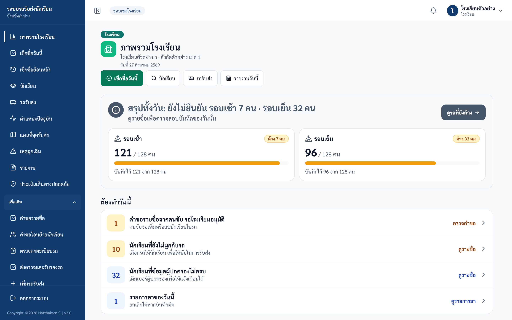
ภาพ: การเปิดหมวด เพิ่มเติม (ภาพจากบัญชีโรงเรียน ของผู้ดูแลระบบมีหมวดมากกว่า แต่กดแบบเดียวกัน)
ภาพรวมขั้นตอนการทำงาน (Flowchart)
ผู้ดูแลระบบเริ่มทุกวันที่ศูนย์ควบคุมระบบ แล้วจัดการงานค้างตามลำดับ รายละเอียดอยู่ในหัวข้อด้านล่าง
เริ่ม / จบขั้นตอนที่คุณทำ◆ จุดตัดสินใจงานของบทบาทอื่นเหตุด่วน
เริ่มต้นใช้งาน
เข้าสู่ระบบ
- เปิด https://schoolbuslampang.com
- พิมพ์ชื่อผู้ใช้ในช่อง ชื่อผู้ใช้หรือทะเบียนรถ (ผู้ดูแลระบบใช้ชื่อผู้ใช้ ไม่ใช่ทะเบียนรถ)
- พิมพ์รหัสผ่าน
- กด เข้าสู่ระบบ

ภาพ: หน้าเข้าสู่ระบบ
ถ้าบัญชีเพิ่งสร้างหรือเพิ่งถูกรีเซ็ตรหัส ระบบจะพาไปหน้า เปลี่ยนรหัสผ่าน ก่อน ให้ตั้งรหัสใหม่ให้เสร็จ จึงจะใช้เมนูอื่นได้

ภาพ: หน้าเปลี่ยนรหัสผ่าน
⚠️ กฎรหัสผ่าน (ใช้ทั้งรหัสของคุณ และรหัสชั่วคราวที่คุณตั้งให้คนอื่น)
- ยาวอย่างน้อย 8 ตัวอักษร
- ห้ามเหมือนชื่อผู้ใช้
- ห้ามเดาง่าย เช่น 12345678 หรือ password
- ห้ามใช้ตัวเดียวซ้ำกันทั้งหมด เช่น aaaaaaaa
ผูก LINE ไว้ก่อน เพื่อใช้ตอนลืมรหัสผ่าน
ผู้ดูแลระบบตั้งรหัสผ่านใหม่เองผ่าน LINE ได้ แต่ต้องผูก LINE ไว้ก่อน ทำครั้งเดียว
- กดชื่อของคุณที่มุมขวาบน
- กด ความปลอดภัยบัญชี
- กด ยืนยัน LINE แล้วเข้าสู่ระบบ LINE ตามที่จอบอก
- พิมพ์รหัสผ่านปัจจุบันในช่อง รหัสผ่านปัจจุบัน
- กด ผูกบัญชี LINE
ทำเสร็จแล้วจะเห็นหัวข้อ ผูก LINE แล้ว LINE ที่ผูกต้องเพิ่มเพื่อน LINE OA @943glwjf ไว้ด้วย
ลืมรหัสผ่าน
- ที่หน้าเข้าสู่ระบบ กด ลืมรหัสผ่านหรือเข้าใช้งานไม่ได้
- กด ลืมรหัสผ่าน (กู้ผ่าน LINE)
- พิมพ์ชื่อผู้ใช้ในช่อง ชื่อผู้ใช้
- กด ส่งลิงก์ไปยัง LINE
- เปิด LINE แล้วกดลิงก์ที่ได้รับ ลิงก์ใช้ได้ 15 นาที
- พิมพ์รหัสใหม่ในช่อง รหัสผ่านใหม่ และ ยืนยันรหัสผ่านใหม่
- กด ยืนยันรหัสผ่านใหม่
ไม่ต้องใช้รหัสกู้คืน ทุกครั้งที่รหัสผ่านเปลี่ยน ระบบจะส่งข้อความแจ้งไปที่ LINE นั้น
⚠️ ถ้าได้ข้อความแจ้งเปลี่ยนรหัสผ่าน ทั้งที่คุณไม่ได้ทำเอง ให้แจ้งผู้ดูแลระบบอีกคนทันที อย่าให้คนอื่นใช้ LINE ของคุณ
ถ้าลืมรหัสผ่านและเข้า LINE ไม่ได้ด้วย ให้ผู้ดูแลระบบอีกคนรีเซ็ตรหัสให้ที่หน้า จัดการผู้ใช้งาน หน่วยงานควรมีบัญชีผู้ดูแลระบบอย่างน้อย 2 บัญชีเสมอ
บทบาทอื่น: จังหวัด สังกัด ขนส่ง โรงเรียน ครูประจำสายชั้น และคนขับ กู้รหัสผ่านผ่าน LINE เองได้แล้ว (ต้องผูก LINE ไว้ก่อน) ถ้ายังไม่ได้ผูก บัญชีหลักของโรงเรียน → สังกัดรีเซ็ตให้ · ครู → บัญชีหลักของโรงเรียนรีเซ็ตให้ · คนขับ → โรงเรียนหรือสังกัดที่ใช้รถคันนั้นรีเซ็ตให้ · สังกัดและขนส่ง → จังหวัดหรือผู้ดูแลระบบรีเซ็ตให้ · จังหวัด → ผู้ดูแลระบบรีเซ็ตให้
ออกจากระบบ
- กดชื่อของคุณที่มุมขวาบน
- กด ออกจากระบบ

ภาพ: เมนูบัญชีที่มุมขวาบน (ภาพจากบัญชีโรงเรียน ของผู้ดูแลระบบมีเมนู ความปลอดภัยบัญชี เพิ่มมา)
งานประจำวัน (ทำตามลำดับ)
- เปิด ศูนย์ควบคุมระบบ ดูว่ามีงานค้างอะไร
- อนุมัติคำขอที่ค้าง (โอนย้ายนักเรียน / เกี่ยวกับรถ)
- ดูแลบัญชีผู้ใช้ที่มีปัญหา
- เปิดดู เรื่องที่ต้องมีส่วนร่วม ว่ามีเรื่องใหม่ไหม
1. ดูศูนย์ควบคุมระบบ
หลังเข้าสู่ระบบ ระบบจะเปิดหน้า ศูนย์ควบคุมระบบ ให้เอง อ่านจากบนลงล่าง
- ดูรายการ ต้องทำวันนี้ ซึ่งอยู่บนสุด แต่ละแถวกดได้ทั้งแถว
- คำขอโอนย้ายนักเรียน และ คำขอเกี่ยวกับรถ = มีคำขอค้าง กด ตรวจคำขอ เพื่อไปอนุมัติ
- คำขอรายชื่อจากโรงเรียน = แจ้งให้ทราบ ไม่มีหน้าอนุมัติของผู้ดูแลระบบ
- เหตุฉุกเฉินใน 7 วัน กด ดูเหตุฉุกเฉิน
- ผู้ใช้ที่ต้องดูแล = บัญชีที่ยังไม่เคยเข้าใช้ หรือยังต้องเปลี่ยนรหัสผ่าน กด ดูรายชื่อ
- รายการที่ถูกลบใน 24 ชั่วโมง = ไว้ตรวจย้อนหลัง ไม่ใช่สัญญาณอันตราย กด ดูประวัติ
- ถ้าไม่มีอะไรค้าง จะขึ้น ไม่มีคำขอหรืองานค้าง ระบบทำงานปกติ
- ดูกรอบสรุป ภาพรวมทั้งจังหวัดวันนี้ ซึ่งบอกความคืบหน้า รอบเช้า และ รอบเย็น เป็นจำนวนคนที่ทำแล้วต่อจำนวนที่ต้องทำ
- ดูตัวเลขขนาดของระบบ: นักเรียน · โรงเรียน · รถรับส่ง · บัญชีที่เปิดใช้
- กด รีเฟรช ที่มุมขวาบน เมื่อต้องการตัวเลขล่าสุด
สีบนหน้าจอ: เขียว = ครบแล้ว · น้ำเงิน = กำลังรับส่ง · เหลือง = ค้างเลยเวลา · แดง = ต้องรีบดู · เทา = ยังไม่ถึงเวลาหรือวันหยุด รอบที่ขึ้น ยังไม่ถึงเวลา เป็นเรื่องปกติ
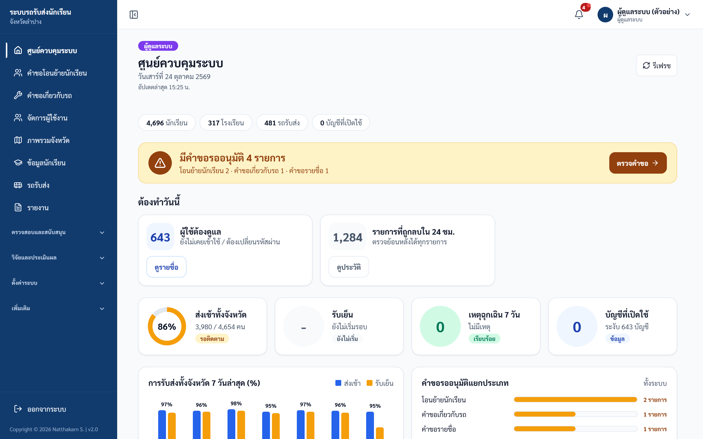
ภาพ: ศูนย์ควบคุมระบบ
ทำเสร็จแล้วจะเห็น: รู้ว่าวันนี้มีคำขอหรือบัญชีที่ต้องดูแลกี่รายการ
กระดิ่งมุมขวาบน (มีทั้งบนคอมพิวเตอร์และมือถือ): ตัวเลขสีแดงคือจำนวนเรื่องที่รอ กดแล้วจะเห็น แจ้งเตือนระบบ (ถ้ามี กดเพื่อไปหน้า สุขภาพระบบ) และ คำขอที่รอดำเนินการ: คำขอโอนย้ายนักเรียน · คำขอเกี่ยวกับรถ · คำขอปรับรายชื่อ/รถ กดแถวเพื่อไปหน้านั้น
2. อนุมัติคำขอโอนย้ายนักเรียน
โรงเรียนส่งคำขอเมื่อนักเรียนย้ายโรงเรียน หรือเมื่อบันทึกโรงเรียนผิด นักเรียนจะยังไม่ถูกย้ายจนกว่าคุณจะอนุมัติ
- เปิดเมนู คำขอโอนย้ายนักเรียน
- เลือกตัวกรอง รออนุมัติ
- กด เปิดดู ที่คำขอ แล้วอ่านรายละเอียดและคำเตือน
- กด อนุมัติและดำเนินการโอนย้าย หรือ ไม่อนุมัติคำขอ
- พิมพ์ หมายเหตุผู้ดูแล (ต้องกรอก)
- กด ยืนยันอนุมัติและโอนย้าย หรือ ยืนยันไม่อนุมัติ
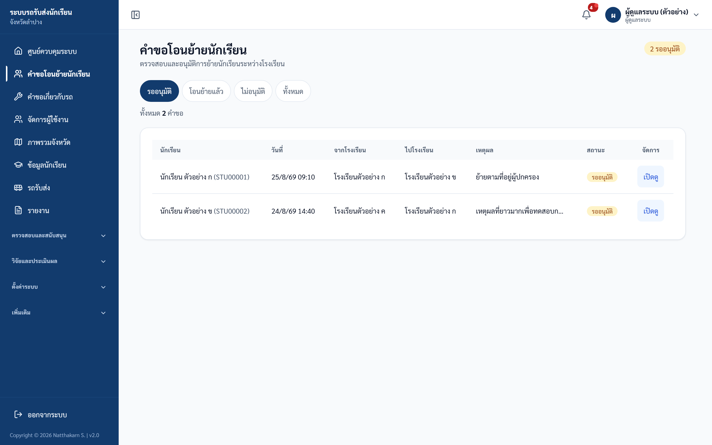
ภาพ: คำขอโอนย้ายนักเรียน
ทำเสร็จแล้วจะเห็น: คำขอเปลี่ยนเป็น โอนย้ายแล้ว นักเรียนไปอยู่โรงเรียนใหม่ แต่ยังไม่มีรถ โรงเรียนใหม่ต้องจัดรถให้เอง
💡 ถ้าป้ายสถานะขึ้น ต้องตรวจสอบใหม่ แปลว่าข้อมูลนักเรียนเปลี่ยนหลังส่งคำขอ ให้เปิดดูอีกครั้งก่อนอนุมัติ ถ้าขึ้น ยกเลิกแล้ว แปลว่าโรงเรียนถอนคำขอเอง ไม่ต้องทำอะไร
3. อนุมัติคำขอเกี่ยวกับรถ
คำขอมี 4 แบบ: ขอกู้คืนรถ · ขอใช้รถที่มีอยู่ · ขอเพิ่มรถ · ขอตรวจสอบ
- เปิดเมนู คำขอเกี่ยวกับรถ
- เลือกตัวกรอง รออนุมัติ
- กด เปิดดู ที่คำขอ
- กด อนุมัติและกู้คืนรถ (คำขอกู้คืน) หรือ อนุมัติคำขอ (แบบอื่น) หรือ ไม่อนุมัติ
- พิมพ์ หมายเหตุผู้ดูแล (ต้องกรอก)
- กดปุ่มยืนยันอีกครั้ง
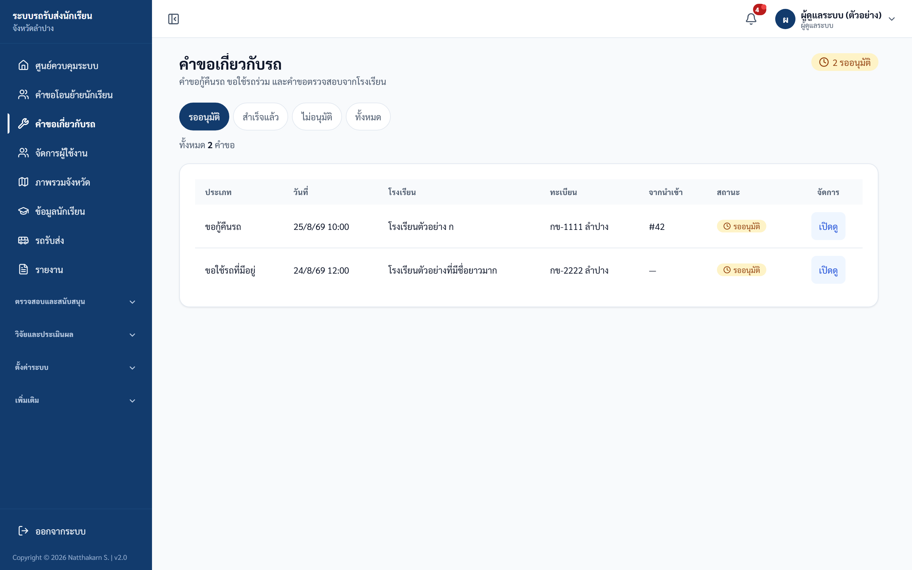
ภาพ: คำขอเกี่ยวกับรถ
ทำเสร็จแล้วจะเห็น: คำขอเปลี่ยนเป็น สำเร็จแล้ว มีแค่คำขอกู้คืนรถที่นำรถกลับมาใช้จริง คำขอแบบอื่นเป็นการรับทราบ ไม่ได้แก้ข้อมูลรถ
ถ้าปุ่มอนุมัติกดไม่ได้ (สีจาง) แปลว่ามีรถทะเบียนเดียวกันใช้งานอยู่แล้ว ต้องจัดการรถคันนั้นก่อน
คำขอกู้คืนรถจากโรงเรียนตอนนี้แจ้งโรงเรียนว่า รอสังกัดของโรงเรียนตรวจสอบ สังกัดอนุมัติเองได้ ผู้ดูแลระบบยังอนุมัติได้เช่นกัน ถ้าคำขอค้างนาน ให้ติดตามสังกัดก่อน
4. ดูแลบัญชีผู้ใช้
เปิดเมนู จัดการผู้ใช้งาน ค้นหาด้วยช่อง ค้นหาชื่อผู้ใช้… หรือกรองด้วย ทุกบทบาท ป้ายสถานะมี 3 แบบ: ใช้งาน (เขียว) · รอเปลี่ยนรหัส (เหลือง) · ระงับ (แดง)
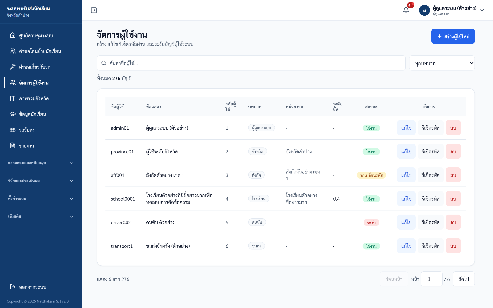
ภาพ: จัดการผู้ใช้งาน
สร้างผู้ใช้ใหม่
- กด สร้างผู้ใช้ใหม่
- พิมพ์ ชื่อผู้ใช้ และ รหัสผ่าน ชั่วคราว (ตามกฎรหัสผ่านด้านบน)
- เลือก บทบาท
- ถ้าเป็นโรงเรียน สังกัด หรือจังหวัด ให้เลือก หน่วยงาน
- ถ้าเป็นบัญชีครูประจำสายชั้น ให้เลือก ระดับชั้น (สำหรับครูประจำสายชั้น) ถ้าเป็นบัญชีหลักของโรงเรียน ไม่ต้องเลือก
- กด สร้างผู้ใช้
ทำเสร็จแล้วจะเห็น: บัญชีใหม่ในตาราง ป้าย รอเปลี่ยนรหัส แจ้งชื่อผู้ใช้และรหัสชั่วคราวให้เจ้าของบัญชีทางช่องทางที่ปลอดภัย
รีเซ็ตรหัสผ่านให้ผู้ใช้
- กด รีเซ็ตรหัส ที่แถวของผู้ใช้
- พิมพ์รหัสชั่วคราวใหม่
- กด รีเซ็ตรหัสผ่าน
ทำเสร็จแล้วจะเห็น: ข้อความ รีเซ็ตรหัสผ่านสำเร็จ ผู้ใช้ต้องตั้งรหัสใหม่ตอนเข้าครั้งถัดไป และเครื่องที่เข้าระบบค้างไว้จะถูกออกจากระบบ
รีเซ็ตรหัสบัญชีใดก็ตามที่ไม่ใช่ผู้ดูแลระบบ (จังหวัด สังกัด ขนส่ง โรงเรียน ครู หรือคนขับ) จะยกเลิก LINE ที่บัญชีนั้นผูกไว้สำหรับกู้รหัสผ่านด้วย (ปิดใช้งานบัญชีจังหวัด สังกัด หรือขนส่งก็ยกเลิกเช่นกัน) ใช้ตอนส่งมอบบัญชีให้ผู้รับผิดชอบคนใหม่ เจ้าของบัญชีต้องผูก LINE ใหม่ถ้าต้องการกู้รหัสผ่านผ่าน LINE
💡 ก่อนรีเซ็ตให้ ดูว่าเจ้าของบัญชีกู้เองผ่าน LINE ได้ไหม (ทุกบทบาทยกเว้นผู้ปกครอง ถ้าผูก LINE ไว้แล้ว) หรือหน่วยงานนั้นทำเองได้ไหม: ครูลืมรหัส → บัญชีหลักของโรงเรียน (บัญชีครูประจำสายชั้น) · บัญชีหลักของโรงเรียน → สังกัด (จัดการผู้ใช้งาน) · คนขับ → โรงเรียนหรือสังกัด (หน้า รถรับส่ง ปุ่ม รีเซ็ตรหัสผ่านคนขับ · บัญชีคนขับที่ถูกปิด ใช้ปุ่ม เปิดใช้งานบัญชีคนขับ) · สังกัด/ขนส่ง → จังหวัด (บัญชีสังกัดและขนส่ง)
แก้ไข ระงับ หรือลบบัญชี
- กด แก้ไข เพื่อเปลี่ยน ชื่อแสดง หรือ สถานะ (ใช้งาน / ระงับ) แล้วกด บันทึก
- บัญชีครูประจำสายชั้น: หน้าต่าง แก้ไข มีช่อง ระดับชั้น (ครูประจำสายชั้น) ใช้ย้ายครูจากชั้นหนึ่งไปอีกชั้นหนึ่ง (เปลี่ยนเป็นบัญชีหลักของโรงเรียนไม่ได้) เปลี่ยนชั้นแล้วครูต้องเข้าสู่ระบบใหม่
- ถ้าต้องการลบ กด ลบ ตรวจชื่อในกล่อง ลบผู้ใช้ออกจากระบบ? แล้วกด ลบผู้ใช้
💡 ถ้าบัญชีอาจกลับมาใช้อีก ให้ ระงับ แทนการลบ หน้าแก้ไขเปลี่ยนบทบาทหรือหน่วยงานไม่ได้ ถ้าต้องเปลี่ยน ให้สร้างบัญชีใหม่แล้วระงับบัญชีเดิม
5. เปิดดูเรื่องที่ต้องมีส่วนร่วม
เป็นกล่องรวมข้อเสนอ ข้อร้องเรียน และข้อกังวลจากผู้ใช้ทุกบทบาท ผู้ดูแลระบบเห็นทุกเรื่องในจังหวัด ระบบไม่แจ้งเตือนเมื่อมีเรื่องใหม่ ไม่มีอีเมล ไม่มีข้อความ LINE คุณต้องเข้ามาเปิดดูเอง เช่น ทุกเช้าวันทำการ
- เปิดหมวด เพิ่มเติม แล้วกด เรื่องที่ต้องมีส่วนร่วม
- รายการจะกรอง ที่ยังไม่จบ ไว้ให้ก่อน
- กด ดูรายละเอียด ที่เรื่องที่ต้องการ
- ที่ส่วน บันทึกเหตุการณ์ใหม่ เลือก เหตุการณ์ แล้วกรอกช่องที่ขึ้นมา
- กด บันทึกเหตุการณ์
ลำดับที่ควรทำ: รับเรื่อง → ให้ความเห็นหรือเปิดหารือ → บันทึกมติ → มอบหมายผู้รับผิดชอบ → ดำเนินการเสร็จ → แจ้งผลกลับผู้เสนอ
- บันทึกมติ ต้องเลือกมติ และกรอก เหตุผลของมติ เสมอ
- มอบหมายผู้รับผิดชอบ ต้องกรอก รหัสผู้ใช้ที่รับผิดชอบ (เลขประจำบัญชี ไม่ใช่ชื่อ ดูได้ในคอลัมน์ รหัสผู้ใช้ ของหน้า จัดการผู้ใช้งาน) มอบหมายได้ครั้งเดียว
- แจ้งผลกลับผู้เสนอ ทำได้หลัง ดำเนินการเสร็จ แล้วเท่านั้น และต้องกรอก สิ่งที่แจ้งกลับผู้เสนอ ขั้นนี้สำคัญที่สุด เพราะเป็นหลักฐานว่าเรื่องได้รับคำตอบ
ถ้าหาเหตุการณ์ที่ต้องการในรายการไม่เจอ แปลว่าเรื่องยังไม่ถึงขั้นนั้น
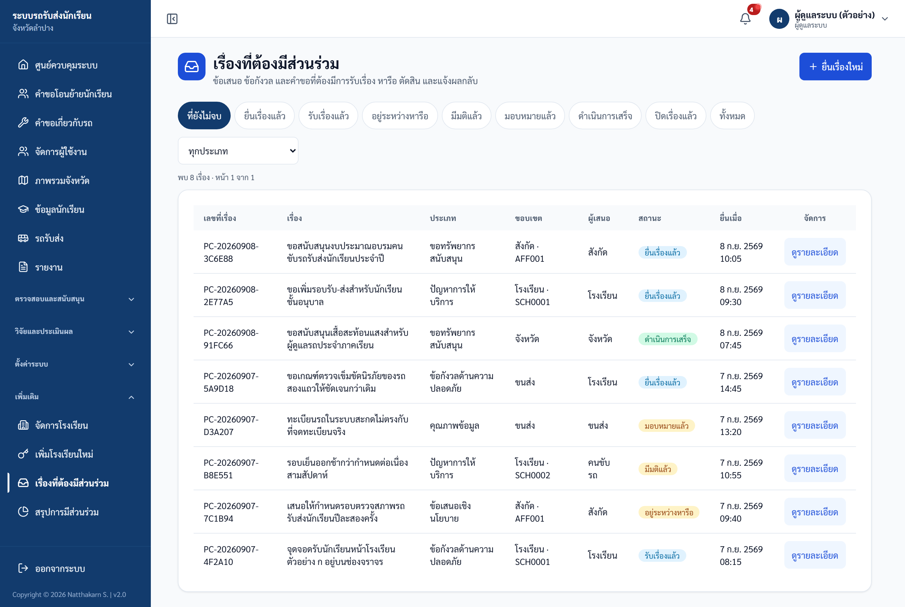
ภาพ: รายการเรื่องที่ต้องมีส่วนร่วม
ทำเสร็จแล้วจะเห็น: ข้อความ บันทึกเหตุการณ์สำเร็จ และเหตุการณ์ใหม่ต่อท้ายลำดับเหตุการณ์ เมื่อแจ้งผลกลับแล้ว เรื่องจะเป็น ปิดเรื่องแล้ว
⚠️ เหตุการณ์ที่บันทึกแล้วแก้หรือลบไม่ได้ ถ้าพิมพ์ผิด ให้บันทึก ให้ความเห็น อธิบายเพิ่ม ห้ามพิมพ์ชื่อนักเรียน เลขบัตรประชาชน รหัสนักเรียน หรือเบอร์โทร ลงในช่องใด ๆ เพราะหลายบทบาทอ่านได้
งานอื่น ๆ (ทำเมื่อจำเป็น)
แก้ปัญหาข้อมูลคนขับ
ใช้เมื่อคนขับเข้าระบบไม่ได้เพราะบัญชีซ้ำ ต้องย้ายคนขับไปรถคันอื่น หรือต้องปิดบัญชีคนขับ
- เปิดเมนู สุขภาพข้อมูลคนขับ ดูการ์ดสรุป เช่น รถที่ยังไม่มีคนขับ หรือ บัญชีซ้ำ/ถูกปิดใช้งาน
- กด เครื่องมือจัดการคนขับ
- เลือก การดำเนินการ: กู้คืนบัญชีคนขับ / ย้ายคนขับไปรถใหม่ / ปิดใช้งานคนขับ
- พิมพ์ รหัสผู้ใช้คนขับ (ดูได้ในคอลัมน์ รหัสผู้ใช้ ของหน้า จัดการผู้ใช้งาน ถ้าย้ายรถ ให้พิมพ์ รถปลายทาง ด้วย)
- กด ตรวจสอบก่อนดำเนินการ แล้วอ่านผลว่าทำได้ ถูกบล็อก หรือมีคำเตือน
- พิมพ์ เหตุผล
- กด ยืนยันดำเนินการ
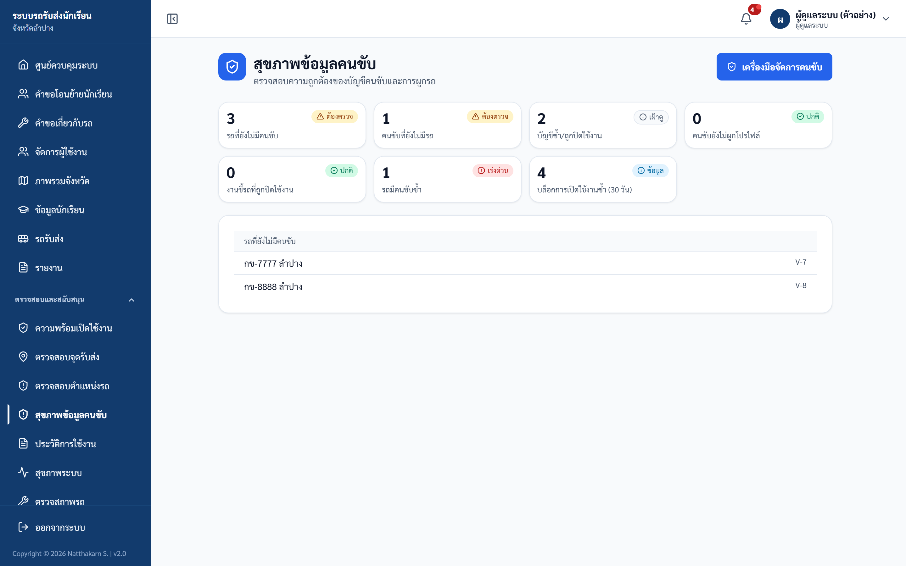
ภาพ: สุขภาพข้อมูลคนขับ
ทำเสร็จแล้วจะเห็น: ข้อความ สำเร็จแล้ว และตัวเลขในการ์ดสรุปเปลี่ยนตาม
คนขับลืมรหัส หรือรถเปลี่ยนคนขับ ให้โรงเรียนหรือสังกัดที่ใช้รถคันนั้นทำเองที่หน้า รถรับส่ง (ปุ่ม รีเซ็ตรหัสผ่านคนขับ / แก้ไขข้อมูลคนขับ / เปลี่ยนคนขับ) ถ้าบัญชีคนขับถูกปิดใช้งาน โรงเรียนหรือสังกัดกด เปิดใช้งานบัญชีคนขับ ที่หน้าเดียวกันได้เอง (หรือกด เปลี่ยนคนขับ ได้เลยถ้าเป็นคนขับคนใหม่) เครื่องมือนี้ใช้กับกรณีที่หน่วยงานทำเองไม่ได้ เช่น บัญชีคนขับถูกลบ หรือบัญชีซ้ำ
ถ้ารถปลายทางมีคนขับอยู่แล้ว ต้องติ๊ก ยืนยันสิ้นสุดงานคนขับเดิมของรถคันนี้ ก่อนกดยืนยัน ถ้าระบบบล็อกการกู้คืนเพราะบัญชีซ้ำ ให้ใช้บัญชีหลักของคนขับคนนั้นแทน
ดูและปิดเหตุฉุกเฉิน
ดูเหตุฉุกเฉินที่คนขับแจ้งจากทุกรถในระบบ และปิดเหตุเมื่อแก้ไขเสร็จ
- เปิดเมนู เหตุฉุกเฉิน (หัวหน้าจอเขียนว่า เหตุฉุกเฉินทั้งระบบ)
- อ่านแต่ละรายการ: ทะเบียนรถ เวลา รายละเอียด และป้าย ยังไม่ปิด (แดง) หรือ ปิดแล้ว · … (เขียว)
- เหตุที่แก้ไขแล้ว กด ปิดเหตุ
- เลือก ผลการดำเนินการ: แก้ไขแล้ว หรือ แจ้งผิด/ไม่ใช่เหตุฉุกเฉิน
- พิมพ์ บันทึกการแก้ไขเหตุ (ต้องกรอก) แล้วกด ปิดเหตุ
ทำเสร็จแล้วจะเห็น: ข้อความ ปิดเหตุฉุกเฉินแล้ว ป้ายเปลี่ยนเป็น ปิดแล้ว และบันทึกต่อท้ายใน หมายเหตุ/ประวัติ (ระบบเก็บว่าใคร บทบาทใด ปิดเมื่อใด)
โรงเรียน (บัญชีหลัก) สังกัด จังหวัด และคนขับของรถคันนั้น (ปุ่ม แก้ไขแล้ว) ก็ปิดเหตุเองได้ ถ้ามีคนปิดไปก่อนแล้ว ปุ่ม ปิดเหตุ จะหายไป
แก้ทะเบียนรถที่พิมพ์ผิด และวันหมดอายุเอกสารรถ
งานนี้ขนส่งทำได้เอง ผู้ดูแลระบบใช้หน้าเดียวกันเมื่อต้องช่วย
- เปิดเมนู แก้ทะเบียนและวันหมดอายุเอกสารรถ (หน้า ค้นรถและนักเรียน) แล้วพิมพ์ทะเบียนในช่อง ทะเบียนรถหรือจังหวัด
- แก้วันหมดอายุ: กด วันหมดอายุเอกสาร ที่แถวของรถ แก้ ทะเบียนรถ (เล่มทะเบียน) หมดอายุ · พ.ร.บ. หมดอายุ · ภาษีรถหมดอายุ แล้วกด บันทึก
- แก้ทะเบียนพิมพ์ผิด: กด แก้ทะเบียน พิมพ์ ทะเบียนใหม่ (พร้อมจังหวัด) และ เหตุผล แล้วกด แก้ทะเบียน
ทำเสร็จแล้วจะเห็น: ข้อมูลในแถวของรถเปลี่ยนตาม ระบบคำนวณความพร้อมของรถใหม่ทันทีหลังบันทึกวันหมดอายุ
⚠️ ชื่อผู้ใช้ของคนขับคือทะเบียนรถ แก้ทะเบียนแล้วคนขับต้องเข้าสู่ระบบด้วยทะเบียนใหม่ (รหัสผ่านเดิม) ให้แจ้งคนขับ · แก้ทะเบียนได้ทางปุ่ม แก้ทะเบียน เท่านั้น (ระบบเปลี่ยนชื่อผู้ใช้คนขับให้พร้อมกัน) · ถ้าเป็นรถซ้ำสองคัน อย่าใช้ปุ่มนี้ ให้ใช้ รวมรถซ้ำ ตามหัวข้อถัดไป · วันหมดอายุประกันภัยไม่อยู่ในหน้าต่างนี้
รวมรถซ้ำ และลบรถ
ใช้เมื่อรถคันเดียวกันถูกเพิ่มไว้สองคัน หรือรถเลิกให้บริการ ปุ่ม รวมรถซ้ำ และ ลบรถ อยู่ท้ายแถวของรถในหน้าเดียวกับปุ่ม แก้ทะเบียน (เมนู แก้ทะเบียนและวันหมดอายุเอกสารรถ) ปุ่ม ลบรถ ขึ้นเฉพาะบัญชีผู้ดูแลระบบ ส่วน รวมรถซ้ำ บัญชีขนส่งก็ทำเองได้ ทั้งสองหน้าต่างแสดงผลกระทบก่อนยืนยันเสมอ และต้องกรอก เหตุผล
รวมรถซ้ำ (เก็บคันที่ถูกต้องไว้ ย้ายข้อมูลจากคันที่ซ้ำไป):
- ที่แถวของรถคันที่ซ้ำ (คันที่จะถูกลบ) กด รวมรถซ้ำ
- อ่านรายการ ย้ายไปรถปลายทาง (เช่น นักเรียน บันทึกขึ้น–ลงรถ จุดรับส่ง) และ ลบทิ้ง (ระบบคำนวณใหม่เอง) พร้อมจำนวนรายการ
- พิมพ์ทะเบียนในช่อง ค้นทะเบียนรถปลายทาง (อย่างน้อย 2 ตัวอักษร) แล้วเลือกรถคันที่ถูกต้องที่จะเก็บไว้
- ตรวจข้อความ รวม … เข้ากับ … พิมพ์ เหตุผล แล้วกด รวมเข้ากับรถปลายทาง
ทำเสร็จแล้วจะเห็น: ข้อความยืนยัน รถคันที่ซ้ำหายจากรายการ นักเรียนและประวัติไปอยู่กับรถปลายทาง
⚠️ รวมแล้วย้อนกลับไม่ได้ · ถ้ารถปลายทางมีคนขับที่มอบหมายอยู่แล้ว การมอบหมายคนขับของคันที่ซ้ำจะสิ้นสุด · บัญชีคนขับของทะเบียนเดิมจะถูกปิดทันที (หน้าต่างบอกชื่อบัญชีก่อนยืนยัน หรือขึ้นว่า ไม่พบบัญชีคนขับที่ใช้ทะเบียนเดิม) คนที่ใช้บัญชีนั้นอยู่จะออกจากระบบ และการผูก LINE กู้รหัสผ่านถูกยกเลิก คนขับต้องเข้าด้วยบัญชีของรถปลายทาง (ชื่อผู้ใช้ = ทะเบียนรถปลายทาง) ให้แจ้งคนขับ ถ้าคนขับไม่รู้รหัสของบัญชีนั้น ให้โรงเรียนรีเซ็ตรหัสผ่านคนขับของรถปลายทาง
ลบรถ (รถเลิกให้บริการ):
- กด ลบรถ ที่แถวของรถ
- อ่านจำนวน นักเรียนที่ใช้รถคันนี้ และ คนขับที่มอบหมายอยู่
- ถ้ายังมีนักเรียนหรือคนขับ ต้องติ๊ก ลบทั้งที่ยังใช้งานอยู่ ก่อน (นักเรียนจะไม่มีรถ และการมอบหมายคนขับสิ้นสุดทันที)
- พิมพ์ เหตุผล แล้วกด ลบรถ
ทำเสร็จแล้วจะเห็น: ข้อความยืนยัน และรถหายจากรายการ เป็นการลบแบบซ่อน ประวัติเดิมยังอยู่ ทะเบียนนี้เพิ่มใหม่ได้ภายหลัง ถ้าเป็นรถซ้ำของอีกคัน ให้ใช้ รวมรถซ้ำ แทน เพื่อย้ายนักเรียนและประวัติไปด้วย
ตั้งภาคเรียนปัจจุบัน
ทำเมื่อขึ้นภาคเรียนใหม่ การเช็กชื่อและการนำเข้านักเรียนจะบันทึกในภาคเรียนที่ตั้งไว้
- เปิดหมวด ตั้งค่าระบบ แล้วกด ภาคเรียนปัจจุบัน
- ถ้ายังไม่มีภาคเรียนที่ต้องการ กด เพิ่มภาคเรียน พิมพ์ รหัสภาคเรียน เช่น 2569-1 แล้วกด บันทึก (ช่องอื่นไม่บังคับ)
- กด ตั้งเป็นปัจจุบัน ที่แถวของภาคเรียนนั้น
- กด ตั้งเป็นปัจจุบัน ในกล่องยืนยันอีกครั้ง
ทำเสร็จแล้วจะเห็น: ข้อความ ตั้งเป็นภาคเรียนปัจจุบันแล้ว และป้าย ปัจจุบัน ย้ายมาที่แถวนั้น ข้อมูลภาคเรียนเก่าไม่หาย
หน้านี้ไม่มีปุ่มแก้หรือลบภาคเรียน ถ้าพิมพ์รหัสผิด ให้เพิ่มรหัสที่ถูกอีกรายการ แล้วตั้งรายการที่ถูกเป็นปัจจุบัน ถ้าขึ้น โหลดรายการภาคเรียนไม่สำเร็จ อย่าเพิ่งเพิ่มภาคเรียนใหม่ ให้ลองโหลดอีกครั้งก่อน
ดูประวัติการใช้งาน
ใช้ตรวจย้อนหลังว่าใครทำอะไรในระบบ เมื่อไร
- เปิดเมนู ประวัติการใช้งาน
- เลือกประเภทการกระทำ (ค่าเริ่มต้นคือ ทุกการกระทำ) และช่วงวันที่ ตั้งแต่ – ถึง
- เลื่อนดูรายการ ใช้ปุ่ม ก่อนหน้า / ถัดไป เพื่อเปลี่ยนหน้า
- ถ้าต้องการไฟล์ กด Export CSV
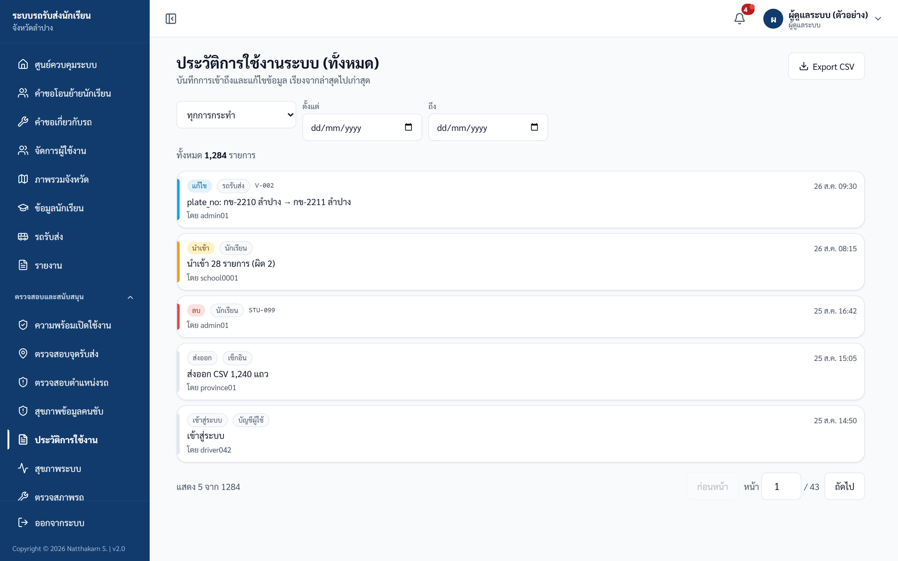
ภาพ: ประวัติการใช้งาน
ทำเสร็จแล้วจะเห็น: รายการตามตัวกรอง ไฟล์ CSV เปิดใน Excel เป็นภาษาไทยได้ เบอร์โทรและข้อมูลลับจะถูกปิดไว้ทั้งบนจอและในไฟล์
ออกรายงาน
- เปิดเมนู รายงาน
- เลือกแท็บ รายวัน / รายเดือน / สรุปภาพรวม / เชิงนโยบาย
- เลือกวันที่หรือเดือน และตัวกรองอื่นที่ต้องการ
- ที่ ดาวน์โหลด: กด CSV, Excel หรือ PDF
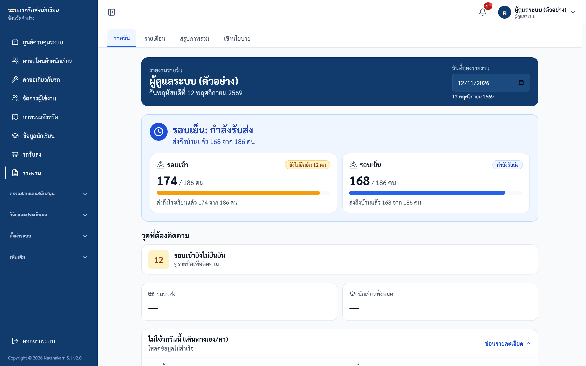
ภาพ: หน้ารายงาน
ทำเสร็จแล้วจะเห็น: ไฟล์รายงานทั้งจังหวัดในเครื่องของคุณ ถ้าดาวน์โหลดถี่มาก ระบบอาจให้รอสักครู่
ทำงานแทนโรงเรียน สังกัด จังหวัด หรือขนส่ง
- จัดการโรงเรียน (หมวด เพิ่มเติม) = หน้าของโรงเรียน เช่น จัดการนักเรียน นำเข้า เช็กชื่อขึ้น-ลงรถ
- เพิ่มโรงเรียนใหม่ (หมวด เพิ่มเติม) = หน้าของสังกัด เช่น บัญชีโรงเรียน เพิ่มโรงเรียน
- ภาพรวมจังหวัด · ข้อมูลนักเรียน · รถรับส่ง = ข้อมูลทั้งจังหวัด
- ตรวจสภาพรถ = หน้าของขนส่ง
- แก้ทะเบียนและวันหมดอายุเอกสารรถ = หน้ารายการรถของขนส่ง (ดูหัวข้อ "แก้ทะเบียนรถที่พิมพ์ผิด และวันหมดอายุเอกสารรถ")
- จัดการสังกัด · จัดการโรงเรียน (หมวด ตรวจสอบและสนับสนุน) · บัญชีสังกัดและขนส่ง = หน้าของจังหวัด วิธีใช้ดูคู่มือจังหวัด
หน้าของโรงเรียนและสังกัดจะมีแถบสีเหลืองด้านบน ผู้ดูแลระบบ — เลือกโรงเรียน: หรือ ผู้ดูแลระบบ — เลือกสังกัด: ต้องเลือกก่อน ข้อมูลจึงจะขึ้น ระบบจำโรงเรียน/สังกัดที่เลือกล่าสุดไว้ในเบราว์เซอร์นั้น เปิดครั้งหน้า (แม้ออกจากระบบแล้วเข้าใหม่) ไม่ต้องเลือกซ้ำ ถ้าใช้เครื่องอื่นหรือเบราว์เซอร์อื่นต้องเลือกใหม่ วิธีใช้หน้าอื่น ๆ ดูคู่มือของบทบาทนั้น
ดูหน้าตรวจสอบอื่น ๆ
- ตรวจสอบจุดรับส่ง = ดูจุดรับส่งทุกจุดบนแผนที่และในตาราง เลือกรูปแบบด้วยปุ่ม แผนที่และตาราง · แผนที่ · ตาราง เลือกรถเพื่อดูเฉพาะคันนั้น
- กดชื่อจุดในตาราง แผนที่จะเลื่อนไปที่จุดนั้น กดจุดบนแผนที่จะเห็นทะเบียนรถ โรงเรียน รอบ จำนวนนักเรียน พิกัด และปุ่ม นักเรียน · แก้ไข · ลบ
- ปุ่มกรองด้านบนนับจุดที่ควรตรวจ: พิกัดผิด (ไม่มีพิกัด พิกัดเป็นศูนย์ หรืออยู่นอกจังหวัดลำปาง) · ไม่มีนักเรียน · จุดซ้ำ (รถคันเดียวกันมีจุดห่างกันไม่เกิน 30 เมตร) กดเพื่อดูเฉพาะจุดเหล่านั้น แล้วแก้ไขหรือลบ
- สีบนแผนที่: น้ำเงิน = ปกติ · ส้ม = ไม่มีนักเรียนหรือจุดซ้ำ · แดง = อยู่นอกจังหวัด
- เพิ่มจุดกรณีพิเศษด้วยปุ่ม เพิ่มกรณีพิเศษ (จุดปกติให้คนขับหรือโรงเรียนเพิ่มเอง)
- ตรวจสอบตำแหน่งรถ = ดูตำแหน่งรถทั้งจังหวัดบนแผนที่ อ่านอย่างเดียว ค้นด้วยทะเบียนหรือชื่อคนขับ ทุกการเปิดดูถูกบันทึกไว้
- ความพร้อมเปิดใช้งาน = ดูว่ารถและคนขับมีข้อมูลครบหรือยัง และ รายการที่ต้องดำเนินการ พร้อมผู้รับผิดชอบ ให้ประสานหน่วยงานนั้นแก้
- สุขภาพระบบ = ตัวเลขการใช้งาน 30 วัน เช่น การเข้าสู่ระบบ การเข้าชมเว็บไซต์ ใช้ดูแนวโน้มคร่าว ๆ
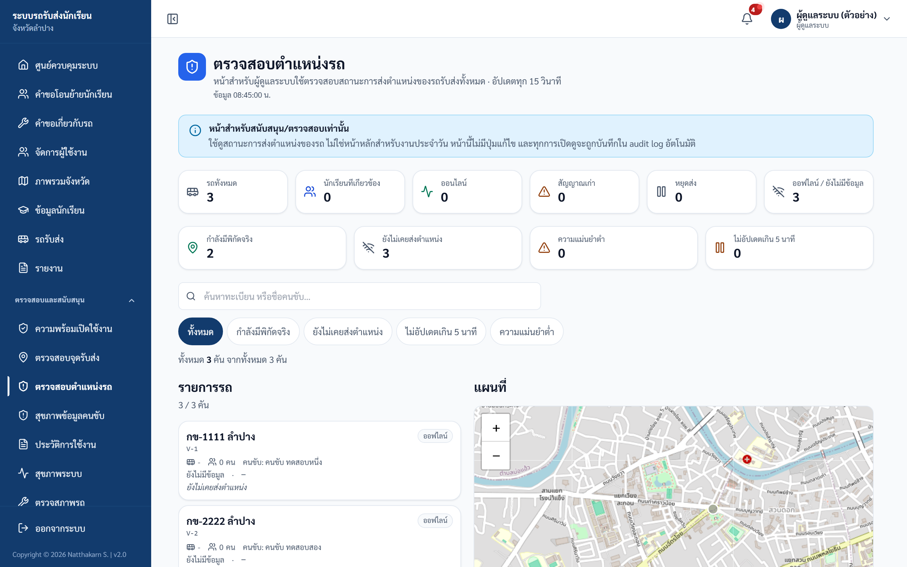
ภาพ: ตรวจสอบตำแหน่งรถ
ดูประวัติเส้นทางรถย้อนหลัง
- ในหน้า ตรวจสอบตำแหน่งรถ กดปุ่ม ประวัติเส้นทาง ใต้รถคันที่ต้องการ (หรือปุ่ม ประวัติเส้นทางรถ ด้านบน แล้วเลือกรถ)
- เลือกวันจากแถบ 7 วันล่าสุด แต่ละวันแสดงระยะทาง วันที่ไม่มีข้อมูลจะเป็นสีจาง
- ดูเส้นทางบนแผนที่: เส้นสีน้ำเงิน = รอบเช้า · เส้นสีส้ม = รอบเย็น · เส้นประสีเทา = ช่วงสัญญาณขาดเกิน 3 นาที (ไม่ทราบเส้นทางจริง) · จุดเขียว = จุดเริ่มต้น · จุดแดง = จุดสิ้นสุด · จุดม่วง = จุดรับส่งของรถคันนี้
- กด เล่น หรือเลื่อนแถบเวลา เพื่อดูว่ารถอยู่ตรงไหนในแต่ละเวลา
ด้านบนแผนที่สรุป ระยะทาง · เวลาเริ่ม–สิ้นสุด · ช่วงสัญญาณขาด · ความเร็วสูงสุด
ℹ️ ระบบเก็บประวัติเส้นทางย้อนหลัง 7 วัน และบันทึกตำแหน่งเฉพาะช่วง 05:00–09:00 และ 15:00–19:00 น. นอกช่วงนี้รถจะแสดงเป็นออฟไลน์ได้ตามปกติ หน้านี้ไม่แสดงข้อมูลนักเรียน และระบบบันทึกไว้ว่าใครเปิดดู
หน้าวิจัยและประเมินผล
หมวด วิจัยและประเมินผล ใช้กับงานประเมินโครงการ
- กรอบวัดผลระบบ = เอกสารอ่านประกอบ ตัวชี้วัดของแต่ละบทบาท
- เปรียบเทียบค่าตั้งต้น (หัวหน้าจอเขียนว่า เปรียบเทียบ Baseline กับสถานะปัจจุบัน) = กด Snapshot วันนี้ หรือ สร้าง Baseline เพื่อเก็บค่าไว้เทียบ สร้าง Baseline ซ้ำภายใน 24 ชั่วโมงไม่ได้
- ส่งออกข้อมูลวิจัย = เลือกช่วงวันที่และชุดข้อมูล ดู ตัวอย่างข้อมูลที่จะส่งออก แล้วดาวน์โหลด JSON / CSV / Excel
- ประเมินผลแยกบทบาท และ สรุปผู้บริหาร = สรุปความพร้อมของหลักฐานแต่ละบทบาท กด พิมพ์รายงาน เพื่อพิมพ์หรือบันทึกเป็น PDF
⚠️ ตัวเลขในหน้าเหล่านี้คือ ความพร้อมของหลักฐาน ไม่ใช่ผลการวิจัย ถ้าหน้าจอขึ้น ไม่มีข้อมูล ไม่ได้แปลว่า "ไม่มีปัญหา" ถ้าหน้าส่งออกขึ้น ชุดข้อมูลนี้ยังใช้อ้างผลวิจัยไม่ได้ ยังดาวน์โหลดได้ แต่ห้ามนำไปอ้างเป็นผลวิจัย
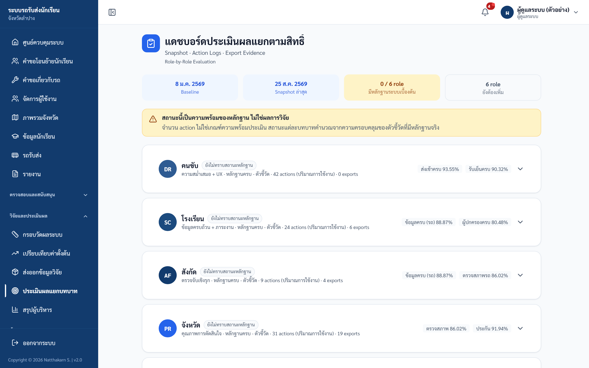
ภาพ: ประเมินผลแยกบทบาท
ยื่นเรื่องใหม่ และดูสรุปการมีส่วนร่วม
- ที่หน้า เรื่องที่ต้องมีส่วนร่วม กด ยื่นเรื่องใหม่
- เลือก ประเภทเรื่อง แล้วพิมพ์ หัวเรื่อง และ รายละเอียด
- เลือก ขอบเขตของเรื่อง แล้วพิมพ์ รหัสหน่วยงาน เช่น SCH0001 (ขอบเขตจังหวัดไม่ต้องพิมพ์รหัส)
- กด ยื่นเรื่อง
ขอบเขตที่เลือกเป็นตัวกำหนดว่าหน่วยงานไหนเห็นเรื่องนี้ ให้เลือกหน่วยงานที่ต้องรับเรื่องไปทำ ค้นในรายการก่อนยื่น เพราะระบบไม่ตรวจเรื่องซ้ำ
เมนู สรุปการมีส่วนร่วม แสดงจำนวนเรื่องทั้งจังหวัด แยกตามสถานะ ประเภท และผู้เสนอ ตัวเลขนี้เป็นการนับงาน ไม่ใช่ผลวิจัย และยังวัดเรื่องเกินกำหนดไม่ได้
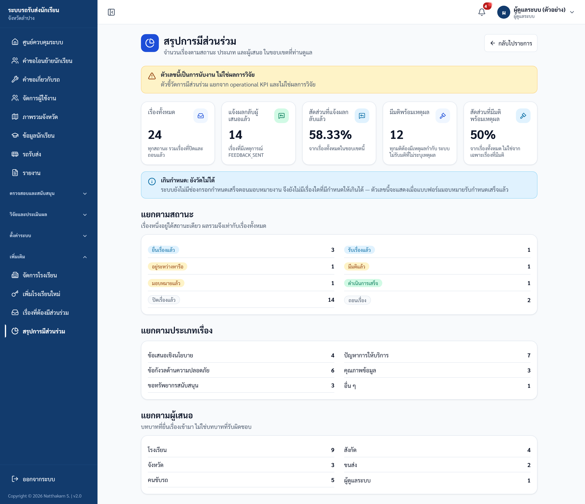
ภาพ: สรุปการมีส่วนร่วม
ปัญหาที่พบบ่อย
| ถ้าเห็น/ถ้าเกิด | ให้ทำแบบนี้ |
|---|---|
| ชื่อผู้ใช้หรือรหัสผ่านไม่ถูกต้อง | ตรวจชื่อผู้ใช้และรหัสผ่านอีกครั้ง บัญชีที่ถูกระงับแต่พิมพ์รหัสผิดก็ขึ้นข้อความนี้ ให้เปิดดูสถานะที่หน้า จัดการผู้ใช้งาน |
| ผู้ใช้แจ้งว่าขึ้น บัญชีถูกปิดใช้งาน | บัญชีถูกระงับ (ขึ้นเมื่อพิมพ์รหัสผ่านถูก) ข้อความบอกต่อว่าติดต่อใคร: ครู → บัญชีหลักของโรงเรียน · บัญชีหลักของโรงเรียน → สังกัดหรือผู้ดูแลระบบ · บทบาทอื่น → ผู้ดูแลระบบ เปิดให้ได้ที่ จัดการผู้ใช้งาน › แก้ไข › สถานะ (บัญชีสังกัด/ขนส่ง จังหวัดเปิดให้ได้ด้วย) |
| มีการพยายามเข้าสู่ระบบหลายครั้งจากเครือข่ายนี้ | รอประมาณ 15 นาทีแล้วลองใหม่ บัญชีไม่ได้ถูกปิด |
| เซสชันหมดอายุจากการเปลี่ยนรหัสผ่าน | มีการเปลี่ยนหรือรีเซ็ตรหัสของบัญชีนี้ ให้เข้าสู่ระบบใหม่ด้วยรหัสล่าสุด |
| สร้างผู้ใช้แล้วขึ้น ชื่อผู้ใช้นี้มีอยู่ในระบบแล้ว | ใช้ชื่อผู้ใช้อื่น |
| สร้างหรือรีเซ็ตแล้วรหัสผ่านไม่ผ่าน | ตั้งรหัสให้ยาว 8 ตัวขึ้นไป ไม่เหมือนชื่อผู้ใช้ ไม่เดาง่าย |
| เปิดใช้บัญชีคนขับไม่ได้ (ไม่สามารถเปิดใช้งานบัญชีคนขับนี้ได้…) | อาจเป็นบัญชีซ้ำ ใช้บัญชีหลักของคนขับ หรือใช้ เครื่องมือจัดการคนขับ |
| ลบบัญชีแล้วขึ้น ไม่สามารถลบตัวเองได้ | ระบบไม่ให้ลบบัญชีที่กำลังใช้อยู่ ให้ผู้ดูแลระบบอีกคนทำ |
| คำขอโอนย้ายขึ้น ไม่สำเร็จ | มักเป็นรหัสนักเรียนซ้ำที่โรงเรียนปลายทาง ให้โรงเรียนปลายทางแก้ก่อน แล้วส่งคำขอใหม่ |
| กดอนุมัติแล้วเหมือนไม่มีอะไรเกิดขึ้น | ต้องกรอก หมายเหตุผู้ดูแล แล้วกดปุ่มยืนยันอีกครั้ง |
| ปุ่ม อนุมัติและกู้คืนรถ กดไม่ได้ | มีรถทะเบียนเดียวกันใช้งานอยู่ ต้องจัดการรถคันนั้นก่อน |
| เข้าหน้าโรงเรียนหรือสังกัดแล้วไม่มีข้อมูล หรือขึ้นข้อผิดพลาด | เลือกโรงเรียนหรือสังกัดที่แถบสีเหลืองด้านบน |
| ที่หน้าเรื่องที่ต้องมีส่วนร่วม หาเหตุการณ์ที่ต้องการไม่เจอ | เรื่องยังไม่ถึงขั้นนั้น ทำขั้นก่อนหน้าให้ครบก่อน |
| หน้า ศูนย์ควบคุมระบบ ขึ้น โหลดข้อมูลบางส่วนไม่สำเร็จ | กด รีเฟรช อีกครั้ง |
| แก้ทะเบียนแล้วคนขับเข้าระบบไม่ได้ | คนขับต้องพิมพ์ ทะเบียนใหม่ ในช่องชื่อผู้ใช้ รหัสผ่านเดิม |
| รวมรถซ้ำแล้ว คนขับเข้าด้วยทะเบียนเดิมไม่ได้ | เป็นปกติ บัญชีของทะเบียนเดิมถูกปิดตอนรวมรถ ให้คนขับเข้าด้วยทะเบียนของรถปลายทาง ถ้าไม่รู้รหัส ให้โรงเรียนกด รีเซ็ตรหัสผ่านคนขับ ของรถปลายทาง |
| ไม่มีปุ่ม ปิดเหตุ | เหตุนั้นปิดแล้ว ดูว่าใครปิดได้ใน หมายเหตุ/ประวัติ |
ติดต่อใครเมื่อมีปัญหา
- ลืมรหัสผ่านและเข้า LINE ไม่ได้ → ให้ผู้ดูแลระบบอีกคนรีเซ็ตรหัสให้
- ระบบล่ม เปิดเว็บไม่ได้ หรือต้องการเปิดความสามารถใหม่ → ติดต่อผู้ดูแลเซิร์ฟเวอร์
- ผู้ใช้บทบาทอื่นลืมรหัสผ่าน → ให้หน่วยงานของผู้ใช้รีเซ็ตก่อน: ครู → บัญชีหลักของโรงเรียน · บัญชีหลักของโรงเรียน → สังกัด · คนขับ → โรงเรียนหรือสังกัดที่ใช้รถคันนั้น · สังกัด/ขนส่ง → จังหวัด · จังหวัด → คุณ ถ้าหน่วยงานทำไม่ได้ คุณรีเซ็ตให้ที่หน้า จัดการผู้ใช้งาน
สิ่งที่ต้องบอกเมื่อแจ้งปัญหา:
- ชื่อผู้ใช้ของบัญชีที่มีปัญหา
- วันและเวลาที่เกิด
- หน้าหรือเมนูที่ใช้อยู่
- ภาพหน้าจอที่เห็นข้อความผิดพลาด
งานดูแลเซิร์ฟเวอร์ เช่น ติดตั้งระบบ สำรองข้อมูล ไม่อยู่ในคู่มือนี้ ผู้ดูแลเซิร์ฟเวอร์ดูได้จากคู่มือปฏิบัติการของทีมพัฒนา (OPERATOR_RUNBOOK)
ข้อควรระวังเรื่องข้อมูลนักเรียน
- ทุกการสร้าง แก้ไข ลบ อนุมัติ และดาวน์โหลด ถูกบันทึกในประวัติการใช้งาน พร้อมชื่อบัญชีของคุณ
- ดาวน์โหลดไฟล์เท่าที่จำเป็น เก็บในเครื่องของหน่วยงาน ลบเมื่อใช้เสร็จ ห้ามส่งต่อในกลุ่มแชตทั่วไป
- ห้ามพิมพ์ชื่อนักเรียน เลขบัตรประชาชน หรือเบอร์โทร ลงในช่องหมายเหตุ เหตุผล หรือเรื่องที่ต้องมีส่วนร่วม
- ห้ามให้คนอื่นใช้บัญชีหรือ LINE ที่ผูกไว้ของคุณ ออกจากระบบทุกครั้งเมื่อใช้เครื่องร่วมกับคนอื่น
ตรวจความเข้าใจหลังอบรม
- ☐ ผูก LINE ที่ ความปลอดภัยบัญชี แล้ว และรู้วิธีตั้งรหัสใหม่ผ่าน LINE
- ☐ สร้างผู้ใช้ และรีเซ็ตรหัสให้ผู้ใช้ได้
- ☐ อนุมัติคำขอโอนย้ายนักเรียนได้ (รวมการกรอกหมายเหตุและกดยืนยัน)
- ☐ ตั้งภาคเรียนปัจจุบันได้
- ☐ ปิดเหตุฉุกเฉินพร้อมบันทึกการแก้ไขเหตุได้
- ☐ บอกผู้ใช้ได้ว่าลืมรหัสผ่านแล้วต้องติดต่อหน่วยงานใด
- ☐ บันทึกเหตุการณ์ และแจ้งผลกลับผู้เสนอ ในเรื่องที่ต้องมีส่วนร่วมได้
ℹ️ เมนู นโยบายและสิทธิของฉัน ตอนนี้ขึ้นว่า ยังไม่มีประกาศฉบับที่อนุมัติให้ใช้งาน เป็นเรื่องปกติ เมื่อหน่วยงานอนุมัติประกาศแล้วจะแสดงที่หน้านี้